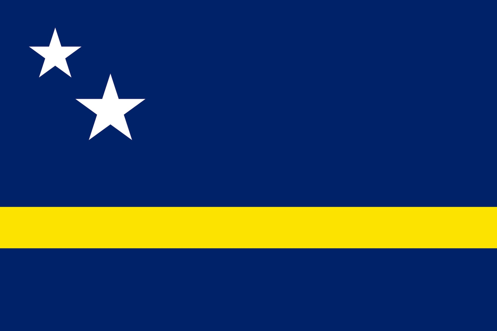
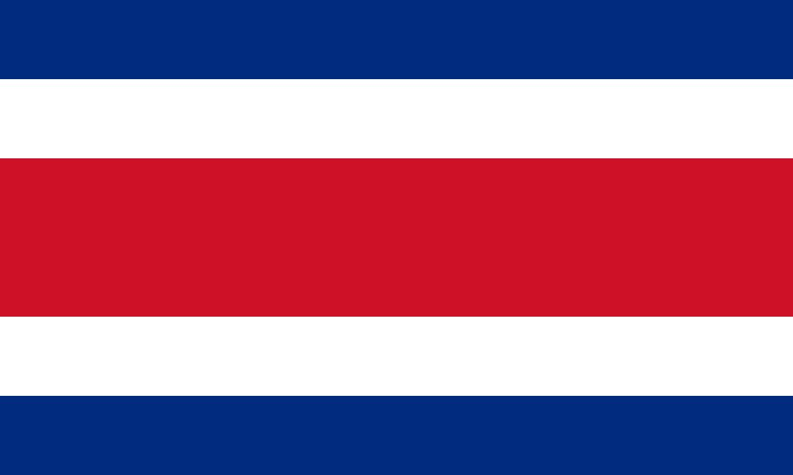

images/curacao-cover.jpg

Caribisch gebied
Curaçao
Van de eerste felle zon tot het zachte afscheid — een week op het eiland, gevolgd door de stille landing in Nederland.
Bon Kòrsou · Drai Laman · Te Awor · Thuiskomen
Bekijk reis
images/costa-rica-cover.jpg

Midden-Amerika
In voorbereidingCosta Rica
Het groen vóór zonsopgang, het uur waarin het land wakker wordt terwijl het nog donker is. De pagina staat klaar voor de eerste dagen.
Madrugada · …
Bekijk reis
Een nieuwe reis toevoegen
Open
index.html, kopieer het reis-blok in de comment hierboven,
pas de tekst en de kleur aan, en maak een nieuwe overzichtspagina aan
(gebruik costa-rica.html als basis). Upload de coverfoto naar
images/ en de reis verschijnt vanzelf.